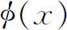
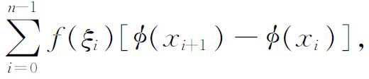
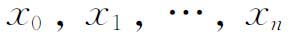
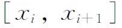
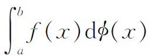
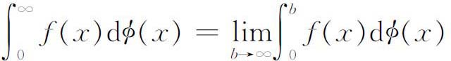

2．斯蒂尔切斯积分
实际上，积分概念的第一次扩充，是从完全不同于刚才所说的一类问题中来的。1894年斯蒂尔切斯（1856—1894）发表了他的《连分数的研究》（Recherches sur les fractions continues）(1)，这是一篇很有独创性的论文，他从一个非常特殊的问题出发，并且解决得非常漂亮。在这篇文章里提出的几个问题，在解析函数论和一元实变函数论里，本质上都是全新的。尤其是为了表示一个解析函数序列的极限，斯蒂尔切斯被迫引进了一种新的积分，推广了黎曼-达布的概念。
斯蒂尔切斯把质量沿着一根直线的正的分布看成是点密度概念的推广（当然，点密度的概念是早已被应用了的）。他注意到这样一种质量分布可以用一个递增函数

给出，表示在区间［0，x］（x＞0）上的总质量，φ的跳跃点对应着质量在这个点集中。对于区间［a，b］上的这样一种分布，他明确地写出黎曼和
其中

是［a，b］的一个划分，而ξi位于
中。然后他证明了当f在［a，b］上连续，划分的最大子区间趋于零时，这个和趋于一个极限，他把这个极限记作
。虽然斯蒂尔切斯在自己的著作中使用了这个积分，但他除了对区间（0，∞）定义
以外，并没有进一步推进这个积分概念。
一直到很久以后，当斯蒂尔切斯积分确实找到了许多应用的时候（见第47章第4节），他的积分概念才被数学家们采用。